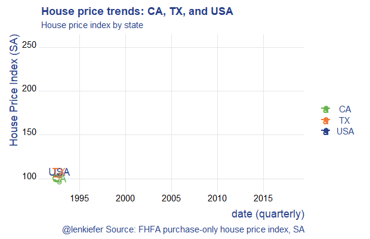

I saw today, via Ropensci a blog post about a new package for making animated gifs with R called gifski now available on CRAN.
Let’s adapt the code we shared last week to use the gifski package. See that post for additional details.
If we run the R code below we’ll generate this animated plot:

This plot shows the evolution of house prices in three states.
The new thing is that the code below swaps out the animation package saveGIF() call for gifski::save_gif. It seems gifski does save some time, though in this example the gains are relatively small. In future I’ll try it out with some of my more complex animations.
# load libraries ----
library(data.table)
library(gifski)
library(tweenr)
library(tidyverse)
library(lubridate)
library(tweenr)
library(ggridges)
# get house price data
df.hpi<-fread("https://www.fhfa.gov/DataTools/Downloads/Documents/HPI/HPI_master.csv")
df.hpi <- mutate(df.hpi,date=as.Date(ISOdate(yr,period*3,1)))
df.us <- filter(df.hpi, place_name=="United States",
hpi_type=="traditional",
hpi_flavor=="purchase-only",
frequency=="quarterly")
df.state <- filter(df.hpi, level=="State",
hpi_type=="traditional",
hpi_flavor=="purchase-only",
frequency=="quarterly")
df.stack <- bind_rows(df.us,df.state)
dfp <-
filter(df.stack,year(date)>1991) %>%
select(date,level,place_id,index_sa) %>%
group_by(level,place_id) %>%
mutate(day=1+(row_number()-1), ease="linear",
rate_label=as.factor(as.character(round(index_sa,0)))) %>%
ungroup() %>%
mutate_if(is.character, as.factor)
# restrict to three plots
dfp2 <- filter(dfp, place_id %in% c("USA","TX","CA"))
dfp2 <-
dfp2 %>%
select(date,place_id,index_sa) %>%
spread(place_id,index_sa) %>%
mutate(day=1+(row_number()-1), ease="linear")
# use tweener::tween_elements and tweener::tween_appear for a smooth interpolation between time points.
plot_data_tween<-
tween_elements(dfp2,
time = "day", group="ease",
ease="ease", nframes = nrow(dfp2)*3)
df_tween_appear <- tween_appear(plot_data_tween, time='day', nframes = nrow(dfp2)*3)
N <- max(df_tween_appear$.frame)
make_plot_appear <- function(i){
p <-
ggplot(data=df_tween_appear, aes(x=date,y=USA))+
geom_line(alpha=0)+
# code here is a bit dense,
geom_line(data= .%>% filter(.frame==i, .age> -3.5) , aes(color="USA"),size=1.05) +
geom_line(data= .%>% filter(.frame==i, .age> -3.5) , aes(y=CA ,color=" CA"),size=1.05) +
geom_line(data= .%>% filter(.frame==i, .age> -3.5), aes(y=TX,color=" TX"),size=1.05 ) +
geom_point(data= .%>% filter(.frame==i, .age> -3.5) %>% tail(1), size=3, alpha=0.5, aes(color="USA"))+
geom_point(data= .%>% filter(.frame==i, .age> -3.5) %>% tail(1), size=3, alpha=0.5 , aes(y=CA ,color=" CA"))+
geom_point(data= .%>% filter(.frame==i, .age> -3.5) %>% tail(1), size=3, alpha=0.5, aes(y=TX,color= " TX"))+
geom_text(data= .%>% filter(.frame==i, .age> -3.5) %>% tail(1), size=5, alpha=0.95, aes(label="USA",color="USA"),nudge_y=5)+
geom_text(data= .%>% filter(.frame==i, .age> -3.5) %>% tail(1), size=5, alpha=0.95 , aes(y=CA ,label="CA",color=" CA"),nudge_y=5)+
geom_text(data= .%>% filter(.frame==i, .age> -3.5) %>% tail(1), size=5, alpha=0.95, aes(y=TX,label="TX",color=" TX"),nudge_y=5)+
theme_ridges(font_family="Roboto")+
scale_color_manual(name="",values=c(rgb(103,180,75, maxColorValue = 256),"#f37735","#27408b"))+
theme(text = element_text(color = "#27408b"))+
labs(y="House Price Index (SA)",x="date (quarterly)",
title="House price trends: CA, TX, and USA",
subtitle="House price index by state",
caption="@lenkiefer Source: FHFA purchase-only house price index, SA")
return(p)
}
# to test plot, could run:
# make_plot_appear(max(df_tween_appear$.frame))
# Set to your directory
mydir<-"YOURDIRECTORY"
t1 <-Sys.time()
gif_file <- save_gif({for (i in seq((1):N)){
g<- make_plot_appear(i)
print(g)
print(paste(i,"out of",N))
}
for (ii in 1:30){
print(g)
print(paste(ii,"out of",30))
}
}, gif_file= paste0(mydir,"/hpa2.gif"),width = 620, height = 400, res = 92, delay=1/20)
t2 <- Sys.time()
t2-t1Lots more to try with this!